Firestore Core Concepts
The 4 data modeling techniques
The data that we query from the firestore is always the whole document.
We design the data model base on 3 things.
1. UI
2. Performance
3. Security
Data Modeling techniques
- Embedding - Model data directly on a document.
- Root collection - Normalize data into separate collections, then reference document IDs.
- Subcollection - Nest data in a collection under a document.
- Bucke - Separate data into multiple documents, but embed as much as possible.
1. Embedding
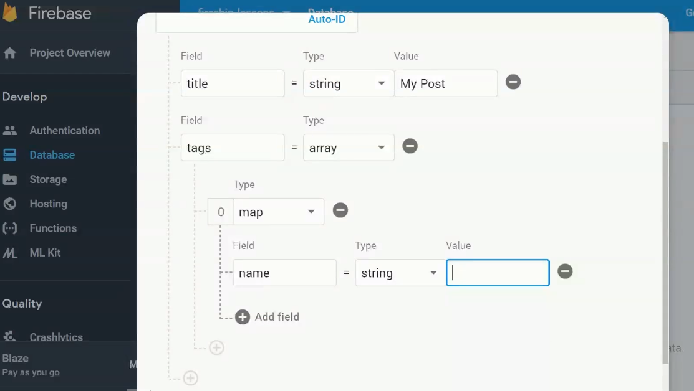Embedding - Putting all the tags into the Post document using map instead of normalizing them into their own tag subcollection.
Pros:
1. Performance - Only require a single document read.
Cons:
1. Security - Everytime we query data from firestore, we get the whole document, imagine we if we are not saving tags here but saving address.
2. Readability - Cannot save big data set (>1mb) into the document and readability wil be bad.
3. Unnecessary Data - We will receive some extra unnecessary data within the same document.
2. Root Collection
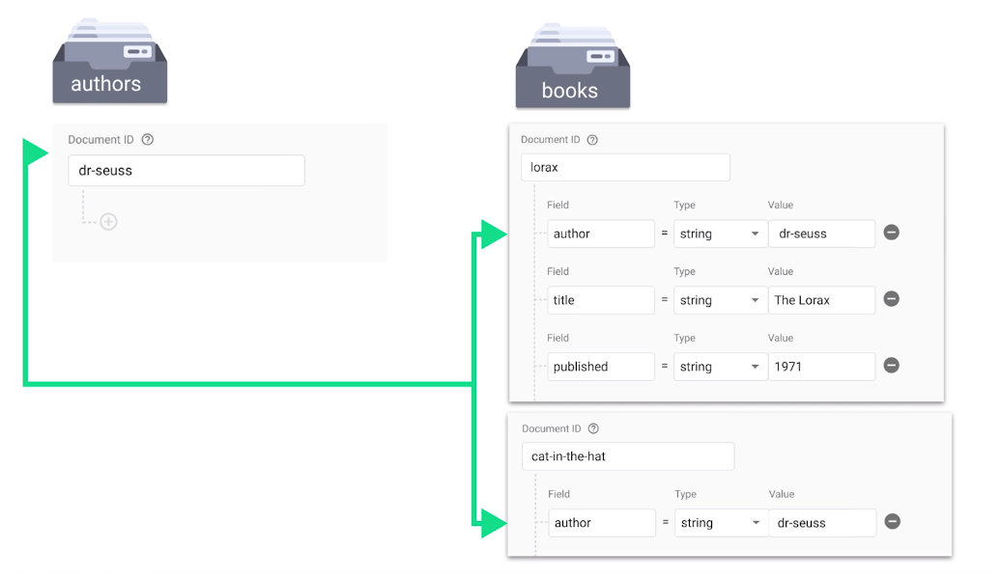Root Collection - Creating a root collection for the 'tags' and maintain the relationship denormalizing the data into two root collections to reference each other as a small piece of field.
3. SubCollections
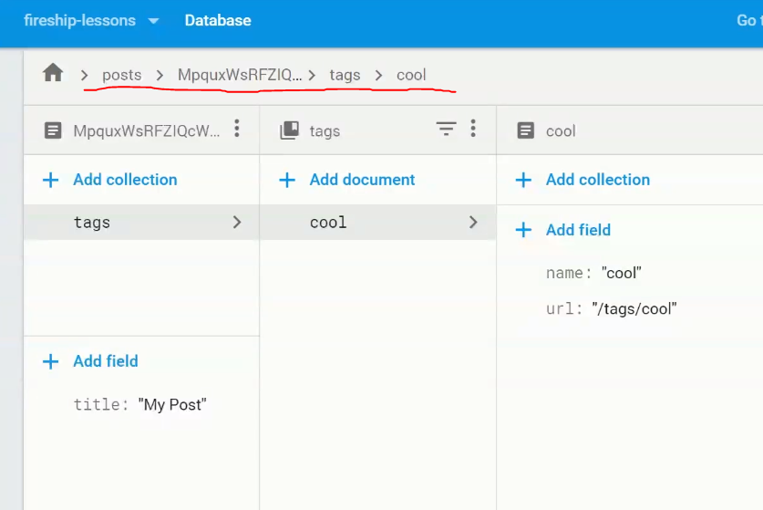 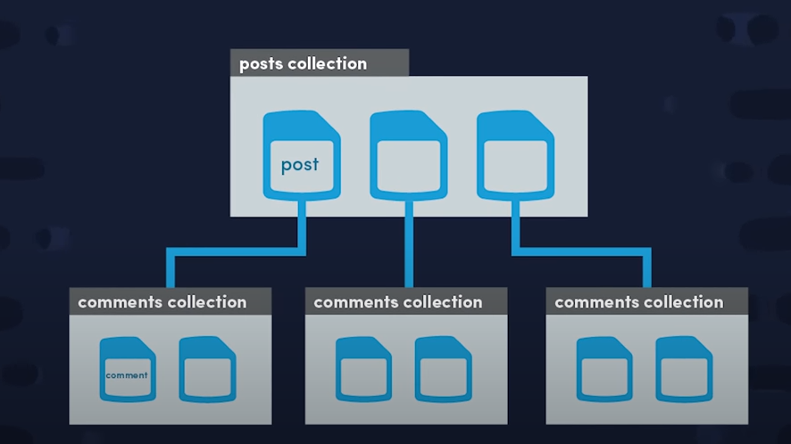Subcollection - Create a subcollection that is nested inside of a document.
We can use Query Multiple Collection to query the property across different subcollections.
4. Bucket
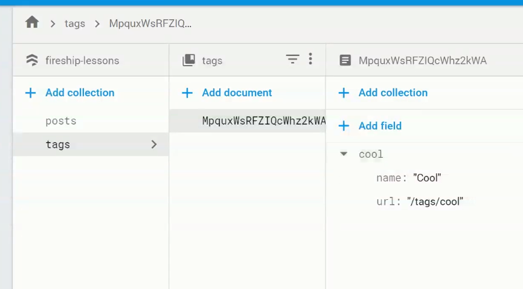 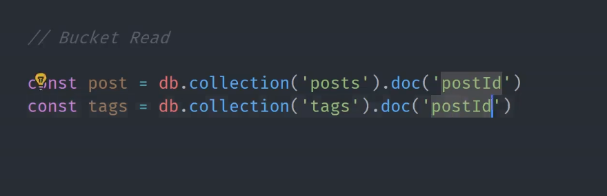Bucket - Two related documents in different collections linked with each other using the same doc id.
This leverage between the embedding and subcollection methods, which need 1 document read and multiple document read with different cons.
Data Modeling Criteria
A loose rule to follow is base on the cardinality or maximum size of the set.
- 1. One-to-Few -> Embed
- 2. One-to-Hundreds -> Bucket
- 3. One-to-Billions -> Collection (subcollection / root collection)
Using Authors collection as an example
1. One-to-Few -> Embed
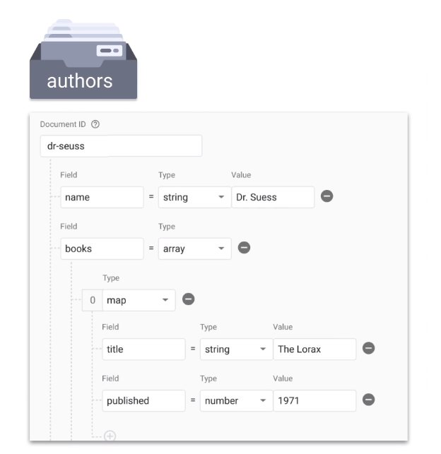⭐Since we determine that each author doc (dr-seuss) in the authors collection will only have a few books, so it will be resonable to put the books embeded into the author doc.
BUT we should consider about the security as well.
We can consider to use bucket or saving doc id inside of the author doc field.
2. One-to-Hundreds -> Bucket
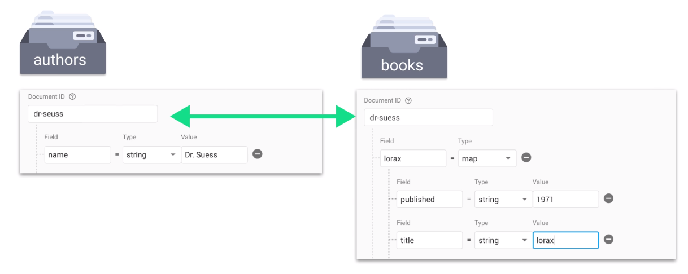⭐If the data set (books) is big (>100), then we can open a books collection and the book document can be linked to the author doc (dr-seuss) using the same document ID (dr-seuss).
REMEMBER, each collection should be unique and the documents in different collections are linked with the same document ID only.
3. One-to-Billions -> Collection (subcollection / root collection)
⭐Since the data set is too high, we can utilize the scalibility of collection, which can scale up to unlimited documents without affecting the query performance.
Data Relationship Criteria
A loose rule to follow is base on the cardinality or maximum size of the set.
- 1. One-to-One
- 2. One-to-Many
- 3. Many-to-Many
Using Authors collection as an example
1. One-to-One
Embed - public data
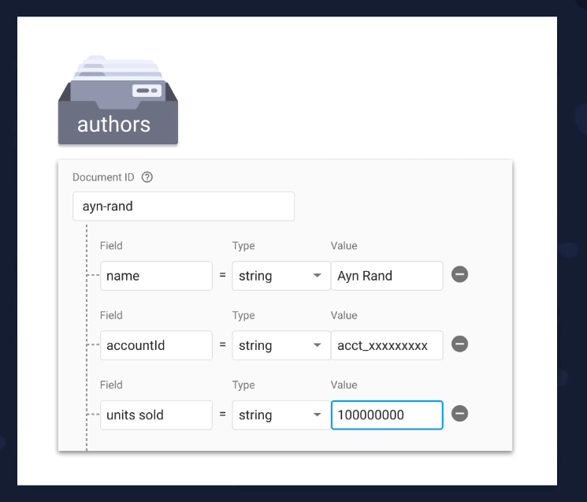 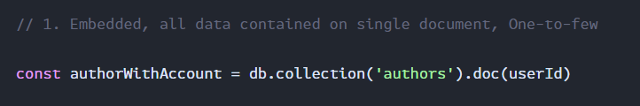⭐We can use embeded method if the data set is small and the specific data can be public to the front-end.
If the data contains sensitive / private information
Bucket - private data + shared doc Id
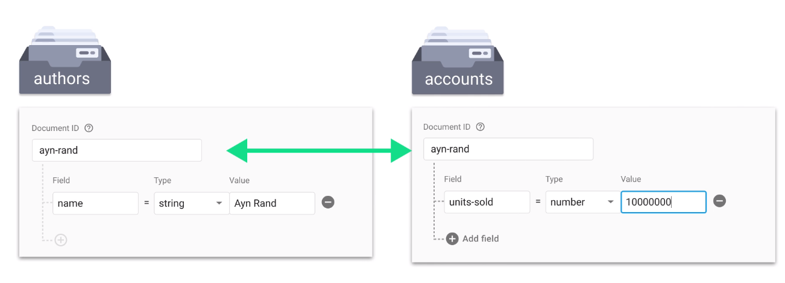 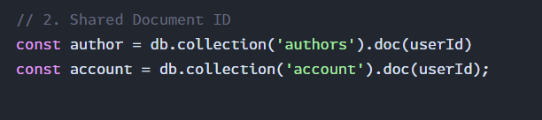⭐For private data, we can use bucket method to seperate the data into different documents and maintain their relationship with the same doc id.
Embeded doc id - private data + no shared doc Id
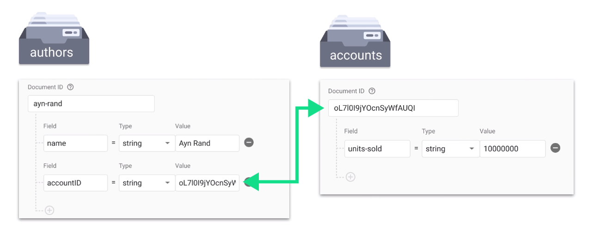 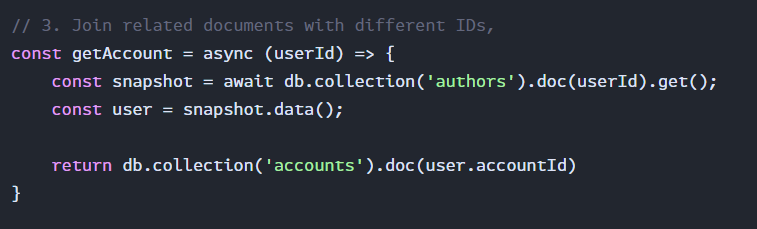⭐Less efficiency, we can save the target data doc Id into the author doc to link them.
This method requires us to query for the target data doc Id first.
2. One-to-Many
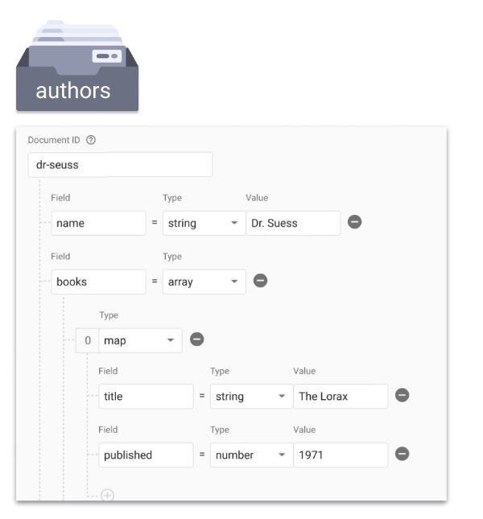What is the problem with Embedded method?
Data Set size can not be too big, and we can not make query on different documents.
Ask yourself this question before designing the data model.
If we do need to query across multiple parents.
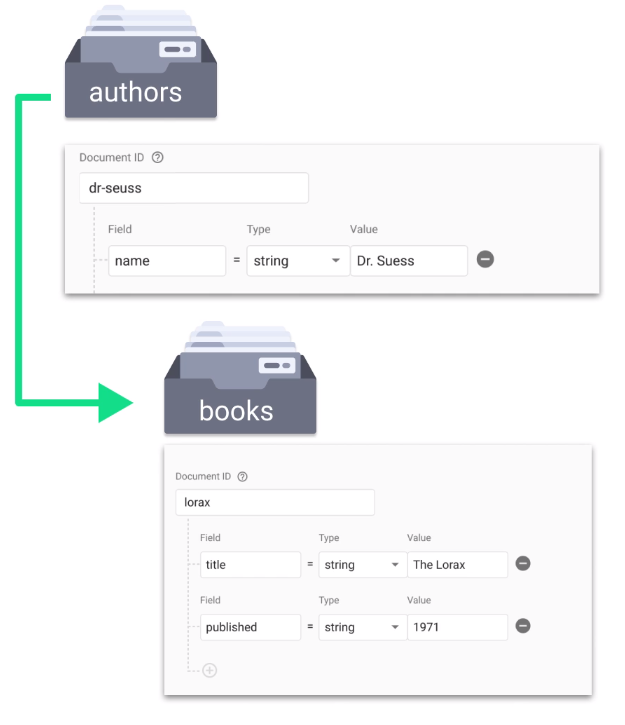LEFT: Subcollection - With Collection Group Queries
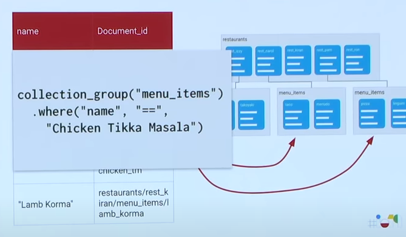RIGHT: Root Collection
3. Many-to-Many
⭐Since the data set is too high, we can utilize the scalibility of collection, which can scale up to unlimited documents without affecting the query performance.